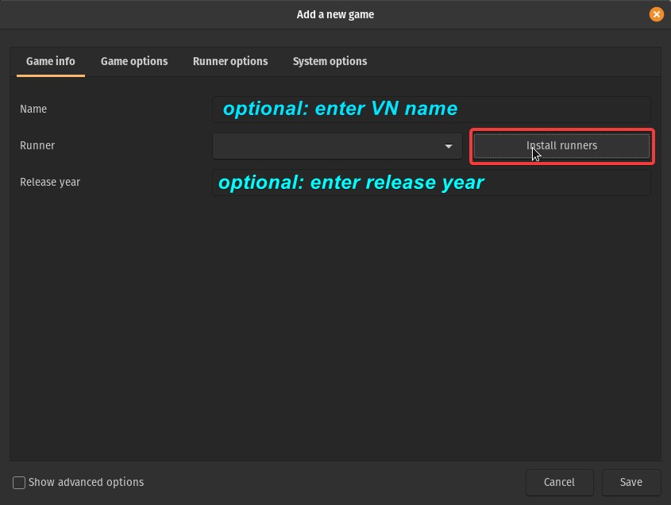
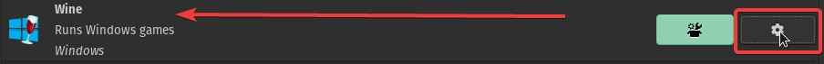
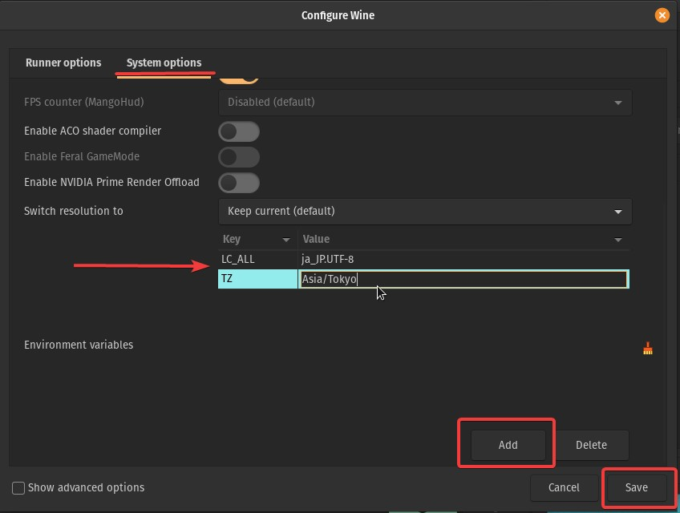
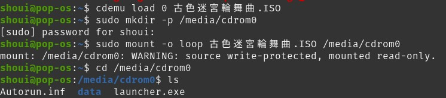
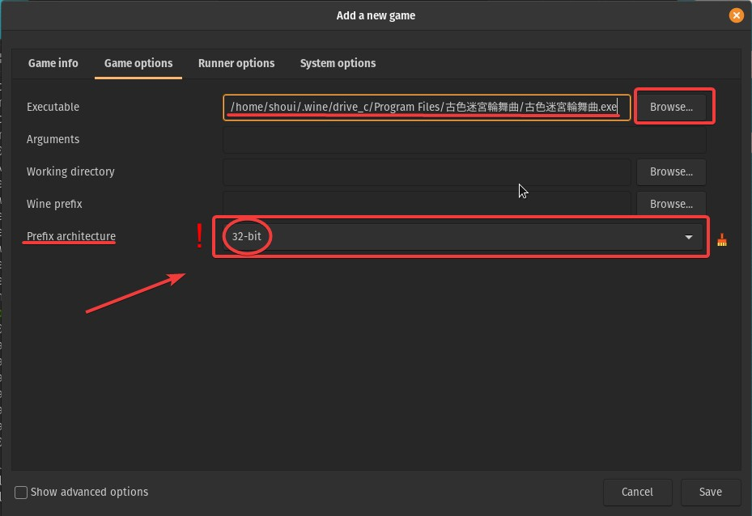

Visual novels on Linux¶
Visual novels are only Microsoft Windows programs, therefore you must use Wine in order to run them. This works exceptionally well on Linux.
Follow the steps below to run VNs on Linux.
Install Wine & Dependencies¶
You will need to enable [multilib] and [community] before running this command. To do this, uncomment the [multilib] and [community] section in /etc/pacman.conf.
sudo pacman -S wine-staging winetricks lutris giflib lib32-giflib libpng lib32-libpng libldap lib32-libldap gnutls lib32-gnutls mpg123 lib32-mpg123 openal lib32-openal v4l-utils lib32-v4l-utils libpulse lib32-libpulse alsa-plugins lib32-alsa-plugins alsa-lib lib32-alsa-lib libjpeg-turbo lib32-libjpeg-turbo libxcomposite lib32-libxcomposite libxinerama lib32-libxinerama ncurses lib32-ncurses opencl-icd-loader lib32-opencl-icd-loader libxslt lib32-libxslt libva lib32-libva gtk3 lib32-gtk3 gst-plugins-base-libs lib32-gst-plugins-base-libs gst-plugins-good lib32-gst-plugins-good gst-plugins-bad gst-plugins-bad-libs gst-plugins-ugly libgudev vulkan-icd-loader lib32-vulkan-icd-loader cups samba dosbox
This may look like a lot of "bloat" but for older games especially, you will need all of these.
Now we might want something called CDemu, this is to trick some VNs into thinking that the original disc for the VN is inserted, so it'll let you play the game.
sudo pacman -S cdemu-client cdemu-daemon
In order to use CDemu, you need to install the VHBA module.
sudo pacman -S vhba-module
Custom and LTS Kernels
If you are using a custom or LTS kernel, install vhba-module-dkms. Otherwise, install vhba-module.
The CDemu service is loaded with the kernel module.
If drivers for CD/DVD drives are not automatically loaded, you can load it manually.
sudo modprobe -a sg sr_mod vhba
First you will need to enable 32-bit architecture.
sudo dpkg --add-architecture i386
wget -nc https://dl.winehq.org/wine-builds/winehq.key
sudo apt-key add winehq.key
sudo add-apt-repository 'deb https://dl.winehq.org/wine-builds/ubuntu/ focal main' -y
Other Ubuntu Versions
If you use a different version of Ubuntu you must do this instead. Replace groovy with the codename of the Ubuntu version you use. This one is for 20.10:
sudo add-apt-repository 'deb https://dl.winehq.org/wine-builds/ubuntu/ groovy main' -y
Add PPA's for Lutris:
sudo add-apt-repository ppa:lutris-team/lutris -y
Update packages:
sudo apt update
sudo apt-get install --install-recommends winehq-stable -y
sudo apt-get install lutris libgnutls30:i386 libldap-2.4-2:i386 libgpg-error0:i386 libxml2:i386 libasound2-plugins:i386 libsdl2-2.0-0:i386 libfreetype6:i386 libdbus-1-3:i386 libsqlite3-0:i386 libgstreamer-plugins-base1.0-0:i386 libgstreamer-plugins-good1.0-0:i386 libgstreamer-plugins-bad1.0-0:i386 libgudev-1.0-0:i386 ocl-icd-dev:i386 -y
winetricks manually because the one on the repository already is outdated and causes errors.First, wget the binary:
wget https://raw.githubusercontent.com/Winetricks/winetricks/master/src/winetricks
chmod to make it into an executable:chmod +x winetricks
/usr/bin so it can be used in a command line.sudo cp winetricks /usr/bin
Optionally, for some VNs, you might want CDemu which tricks VNs into thinking that the original disc is inserted so it'll let you play the game.
Add PPA's for CDEmu:
sudo add-apt-repository ppa:cdemu/ppa -y
sudo apt update
sudo apt-get install vhba-dkms -y
✅ Tested on Debian 11 Bullseye
First you will need to enable 32-bit architecture.
sudo dpkg --add-architecture i386
wget -nc https://dl.winehq.org/wine-builds/winehq.key
sudo apt-key add winehq.key
/etc/apt/sources.list:
deb https://dl.winehq.org/wine-builds/debian/ bullseye main
You will need the Deb Multimedia repository for CDEmu, this is used to trick VNs that the disc is inserted if no crack is available.
Using wget, get its GPG keyring:
wget https://www.deb-multimedia.org/pool/main/d/deb-multimedia-keyring/deb-multimedia-keyring_2016.8.1_all.deb
sudo dpkg -i deb-multimedia-keyring_2016.8.1_all.deb
/etc/apt/sources.list
deb http://www.deb-multimedia.org bullseye main
You also need to append contrib and non-free to your main repository line in /etc/apt/sources.list if you haven't done so already.
Example:
deb http://deb.debian.org/debian bullseye main contrib non-free
Now finally update package repositories:
sudo apt update
Now install all the needed packages, including Wine, Lutris, CDEmu and other Wine dependencies.
sudo apt install --install-recommends winehq-stable lutris dbus-x11 libmirage-plugins gcdemu cdemu-client cdemu-daemon libgnutls30:i386 libldap-2.4-2:i386 libgpg-error0:i386 libxml2:i386 libasound2-plugins:i386 libsdl2-2.0-0:i386 libfreetype6:i386 libdbus-1-3:i386 libsqlite3-0:i386 libgstreamer-plugins-base1.0-0:i386 gstreamer1.0-plugins-good:i386 libgstreamer-plugins-bad1.0-0:i386 libgudev-1.0-0:i386 ocl-icd-dev:i386 -y
Now we need to install winetricks manually because the one on the repository already is outdated and causes errors.
First, wget the binary:
wget https://raw.githubusercontent.com/Winetricks/winetricks/master/src/winetricks
chmod to make it into an executable:chmod +x winetricks
/usr/bin so it can be used in a command line.sudo cp winetricks /usr/bin
sudo apt install vhba-dkms
First add the Wine repository.
Fedora 33:
sudo dnf config-manager --add-repo https://dl.winehq.org/wine-builds/fedora/33/winehq.repo
sudo dnf config-manager --add-repo https://dl.winehq.org/wine-builds/fedora/32/winehq.repo
Now lets install ALL the build dependencies.
sudo dnf install alsa-plugins-pulseaudio.i686 glibc-devel.i686 glibc-devel libgcc.i686 libX11-devel.i686 freetype-devel.i686 libXcursor-devel.i686 libXi-devel.i686 libXext-devel.i686 libXxf86vm-devel.i686 libXrandr-devel.i686 libXinerama-devel.i686 mesa-libGLU-devel.i686 mesa-libOSMesa-devel.i686 libXrender-devel.i686 libpcap-devel.i686 ncurses-devel.i686 libzip-devel.i686 lcms2-devel.i686 zlib-devel.i686 libv4l-devel.i686 libgphoto2-devel.i686 cups-devel.i686 libxml2-devel.i686 openldap-devel.i686 libxslt-devel.i686 gnutls-devel.i686 libpng-devel.i686 flac-libs.i686 json-c.i686 libICE.i686 libSM.i686 libXtst.i686 libasyncns.i686 liberation-narrow-fonts.noarch libieee1284.i686 libogg.i686 libsndfile.i686 libuuid.i686 libva.i686 libvorbis.i686 libwayland-client.i686 libwayland-server.i686 llvm-libs.i686 mesa-dri-drivers.i686 mesa-filesystem.i686 mesa-libEGL.i686 mesa-libgbm.i686 nss-mdns.i686 ocl-icd.i686 pulseaudio-libs.i686 sane-backends-libs.i686 tcp_wrappers-libs.i686 unixODBC.i686 samba-common-tools.x86_64 samba-libs.x86_64 samba-winbind.x86_64 samba-winbind-clients.x86_64 samba-winbind-modules.x86_64 mesa-libGL-devel.i686 fontconfig-devel.i686 libXcomposite-devel.i686 libtiff-devel.i686 openal-soft-devel.i686 mesa-libOpenCL-devel.i686 opencl-utils-devel.i686 alsa-lib-devel.i686 gsm-devel.i686 libjpeg-turbo-devel.i686 pulseaudio-libs-devel.i686 pulseaudio-libs-devel gtk3-devel.i686 libattr-devel.i686 libva-devel.i686 libexif-devel.i686 libexif.i686 glib2-devel.i686 mpg123-devel.i686 mpg123-devel.x86_64 libcom_err-devel.i686 libcom_err-devel.x86_64 libFAudio-devel.i686 libFAudio-devel.x86_64
sudo dnf groupinstall "C Development Tools and Libraries"
sudo dnf groupinstall "Development Tools"
sudo dnf install gstreamer-plugins-base-devel gstreamer-devel.i686 gstreamer.i686 gstreamer-plugins-base.i686 gstreamer-devel gstreamer1.i686 gstreamer1-devel gstreamer1-plugins-base-devel.i686 gstreamer-plugins-base.x86_64 gstreamer.x86_64 gstreamer1-devel.i686 gstreamer1-plugins-base-devel gstreamer-plugins-base-devel.i686 gstreamer-ffmpeg.i686 gstreamer1-plugins-bad-free-devel.i686 gstreamer1-plugins-bad-free-extras.i686 gstreamer1-plugins-good-extras.i686 gstreamer1-libav.i686 gstreamer1-plugins-bad-freeworld.i686
Now install Wine:
sudo dnf install wine
And then Winetricks:
First, wget the binary:
wget https://raw.githubusercontent.com/Winetricks/winetricks/master/src/winetricks
chmod to make it into an executable:chmod +x winetricks
/usr/bin so it can be used in a command line.sudo cp winetricks /usr/bin
And now CDEmu, first enable the rok/cdemu COPR repository:
sudo dnf copr enable rok/cdemu
sudo dnf install cdemu-daemon cdemu-client gcdemu
Now load the VHBA kernel module:
sudo akmods
sudo systemctl restart systemd-modules-load.service
✅ Tested on openSUSE Tumbleweed 20210408
sudo zypper install wine winetricks lutris cdemu-client cdemu-daemon gstreamer-plugins-good gstreamer-plugins-good-32bit gstreamer-plugins-base gstreamer-plugins-base-32bit gstreamer-plugins-libav gstreamer-plugins-libav-32bit gstreamer-plugins-bad gstreamer-plugins-bad-32bit gstreamer-plugins-ugly gstreamer-plugins-ugly-32bit libgudev-1_0-0 libgudev-1_0-0-32bit libSDL2-2_0-0 libjpeg-turbo
sudo modprobe -a sg sr_mod vhba
Make sure your kernel is compiled with the following options enabled:
CONFIG_BLK_DEV_SRCONFIG_ISO9660_FSCONFIG_UDF_FSCONFIG_IA32_EMULATION(for 32 bit support)
and that you have a multilib setup.
It is recommended to have the following global use flags in your make.conf:
Xpulseaudiojpegpng
Refer to the gentoo wiki for more information on different verions of wine available on gentoo here. wine-vanilla should be able to run almost everything fine . Be sure that the flag abi_x86_32 is not turned off FOR wine-vanilla (it's on by default), more info visit the wiki here.
Install the deps.
sudo emerge -v app-emulation/wine-vanilla virtual/wine games-util/lutris app-cdr/cdemu app-emulation/winetricks
Load the vhba module for cdemu
sudo modprobe vhba
To autoload the module on startup, edit your /etc/conf.d/modules file and add this line:
modules="vhba"
In order for the CDEmu daemon to be started automatically by the UI, you will need to have dbus enabled. You can enable it by running:
sudo rc-update add dbus default
## or if systemd the default init
sudo systemctl enable dbus
Configure Wine and install runtimes¶
Creating the Wineprefix¶
First we need to create a 32 bit Wine prefix, this has the best compatibility and 64 bit is unnecessary for VNs.
WINEPREFIX=~/.winevn WINEARCH=win32 wineboot
Using winetricks¶
Now we need to install the common redistributables such as DirectX, Visual C++ Runtimes and .NET Framework 3.5 and other things that make video cutscenes work.
Optional: Font smoothing
You can do winetricks fontsmooth=rgb because without it, the font is simply awful.
Optional: GUI Improvments
You can open the Registry Editor using wine regedit and import this .reg file, the GUI should look nice and clean then.
First you need to get the latest patches for Winetricks or else this will not work.
sudo winetricks --self-update
WINEPREFIX=~/.winevn winetricks ffdshow quartz wmp9 d3dx9 dotnet35 vcrun2003 vcrun2005 vcrun2008 vcrun2010 vcrun2012 vcrun2013 vcrun2015
ffdshow
When installing ffdshow, make sure you check (tick) ☑ every single codec/format or else it will not work!
Installing DXVK slightly improves performance as it is a Vulkan implementation of D3DX9.
WINEPREFIX=~/.winevn winetricks dxvk
Vulkan Unsupported Systems
If your system does not support Vulkan, do not install DXVK. If you want to remove DXVK, follow the instructions here
For some VNs, such as TYPE-MOON's, LAVFilters may be needed to playback video.
WINEPREFIX=~/.winevn winetricks lavfilters
ffdshow and LAVFilters
Some games may break if you have both ffdshow and LAVFilters installed! Make sure you experiment!
Then, run this command to disable DLL overrides, and use the native DLLs instead:
WINEPREFIX=~/.winevn winetricks alldlls=default
Having issues?
You can set it back using winetricks alldlls=builtin
Japanese fonts in Wine¶
You need to install Japanese fonts to Wine now. Please download the pack below.
[Google Drive]
Unzip the file and move the font files to your Fonts folder in ~/.winevn/drive_c/windows/Fonts
Why not install cjkfonts in winetricks?
Because it doesn't work properly for VNs.
Lutris initial setup¶
Environment Variables¶
Once thats done, we can setup Lutris.
Open Lutris, and click the plus icon in the top left corner, and click Install runners.

Scroll down to the bottom and find "Wine" and click the cog icon next to it.

Now go to System options and set the environment variables as shown below and click Save.
- Key:
LC_ALLValue:ja_JP.UTF-8 - Key:
TZValue:Asia/Tokyo
Wine prefix in lutris
Forgot to include this so make sure you set the wine prefix in Lutris too.

Installing the visual novel¶
I will be using 古色迷宮輪舞曲～HISTOIRE DE DESTIN～ for this demonstration. Visual Novels usually come in .ISO files and if not, an .MDS/.MDF file which can be mounted with cdemu.
Mounting disc images¶
Navigate to the path of the disc image:
cd /path/to/visualnovelfolder
MDS
Load the .MDS file with CDEmu first. The Linux mount command will not mount it.
cdemu load 0 /path/to/mds_image.MDS
UDF Volumes
Load the UDF volume with CDEmu. The Linux mount command with the -t udf argument is not advised.
cdemu load 0 /path/to/udf_volume
CDEmu Mount Point?
It should usually be in /run/media/user/image_name
If using a regular ISO9660 ISO file create a mount point for it.
sudo mkdir -p /media/cdrom0
sudo mount -o loop file.ISO /media/cdrom0
ls /media/cdrom0 or whatever your mount point is:

Running the installer¶
Localegen
Generate the ja_JP.UTF-8 locale first.
Next, we will run the setup file using wine:
LC_ALL="ja_JP.UTF-8" TZ="Asia/Tokyo" WINEPREFIX=~/.winevn wine <setup_executable>.exe
.msi installer
If the installer executable is an .msi, run with msiexec instead of wine.
Proceed with the installation. The game may be installed in ~/.winevn/drive_c/Program Files or wherever you chose to install it.
Adding to Lutris¶
Now we can add the game to Lutris so we can launch it quickly.
Back in Lutris, click the plus icon in the corner, add the name of the VN, choose Wine as the runner and under "Game Options" navigate to the game's executable. You should also change the prefix architecture to 32-bit.

AlphaROMdiE
For AlphaROMdiE, you need to add AlphaROMdiE to Lutris as the executable, and the filename .exe of the Visual Novel as an argument. If you are using Wine in a command line it should look something like this:
LC_ALL="ja_JP.UTF-8" TZ="Asia/Tokyo" WINEPREFIX=~/.winevn wine AlphaROMdiE.exe <VN_executable.exe>
disable_conv in the same location as AlphaROMdiE.exe, for the 3rd option, you must create an empty file other_engine in the same location as AlphaROMdiE.exe. You can do this easily by doing:
touch disable_conv other_engine

Vulkan Unsupported Systems
If your system does not support Vulkan, you must disable DXVK in "Runner options", this will fallback to regular D3DX9. DXVK is a Vulkan implementation of Direct3D so we will be keeping it on even though Vulkan may not make much of a difference.
Now you can just launch it in Lutris!

Error: オリジナルディスクを入れてください
Load the .ISO image with cdemu. Even though Linux can mount ISO9660 images without CDEmu, Wine programs cannot seem to find the mounted image.
cdemu load 0 /path/to/image.ISO
and viola!

Now go back to Visual Novel Guide to learn how to use Textractor, it works perfectly under Wine. Also consider adding Textractor to Lutris for quick access.
Linux: Troubleshooting¶
Shift-JIS¶
Credit: Broken Dragon Translation
Do this when you've done everything correctly but your VN text still looks like this: ????? ?????????? ???????????? You don't usually need to do this. This means your VN needs to use ja_JP.sjis instead of ja_JP.UTF-8.
You need to download ja_JP.sjis from here first.
Extract it to a memorable location on your computer and cd into that directory.
cd /path/to/ja_JP.sjis
Now compile the locale using localedef:
localedef -i ja_JP -f SHIFT_JIS ./ja_JP.sjis --no-warnings=ascii
Using sed, edit your locale.gen
sed -i '/ja_JP.UTF-8 UTF-8/a ja_JP.SJIS SHIFT_JIS ' /etc/locale.gen
locale-gen
You can then change the LC_ALL environment variable in Lutris to ja_JP.sjis.
MPEG-1 movie does not play¶
See https://bugs.winehq.org/show_bug.cgi?id=52448 for the fix.
Fuguriya VNs¶
VNs made by Fuguriya such as Sono Hanabira ni Kuchizuke o and Hanahira will not launch with Wine by default. Follow the steps below to fix this.
Download fjfix [here].
Extract the archive.
Now in the terminal, run:
LC_ALL=ja_JP.UTF-8 WINEPREFIX=~/.winevn wine fjfix.exe -f /path/to/MGD
Now it should just work.